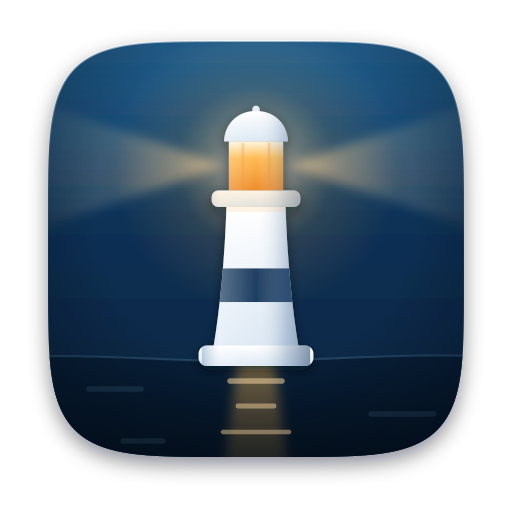

Keelhaven encrypts your folders on your Mac and backs them up to storage you already own — an external drive, your own S3 bucket, or a NAS over SFTP. No account, no subscription, nothing phoning home.
restic seals every snapshot on your Mac. The destination only ever sees ciphertext.
External drive, any S3-compatible bucket, or SFTP to your own NAS. Your bill, your rules.
One purchase, free updates. No seat count, no renewal email, no dark patterns.
No analytics, no crash pings, no account. The only outbound traffic is your backup.
How it works
Pick the folders worth keeping. Keelhaven never touches anything you didn't select, and never scans the rest of your disk.
An external drive, any S3-compatible bucket, or SFTP to a NAS. Passwords and access keys go straight to the macOS Keychain.
Hourly, daily or weekly. If your Mac was asleep when a backup was due, it catches up as soon as it wakes.
What's inside
The backup itself is handled by restic — open source, audited, and used in production for a decade. Deduplicated and incremental: the second backup only sends what changed.
One Keychain entry per plan. Credentials reach restic through the child process environment — never in argv, never written to disk, never in a log.
A quiet timer, one backup at a time, and a catch-up pass on wake so a closed lid never costs you a day.
Pick a plan, pick a snapshot, pick a folder. Keelhaven restores into a fresh subfolder, so a restore can never overwrite what you have now.
SwiftUI, no Electron, no helper daemon zoo. A status dot per plan and a progress bar while it runs — that's the whole interface.
Done, or failed with the actual error restic returned. No badge that just says "problem".
No lock-in
Keelhaven is a front end, not a file format. Every plan writes an ordinary restic repository, so you can list, verify and restore it with the open-source restic CLI — on any Mac, any Linux box, with or without this app installed.
If Keelhaven disappears tomorrow, your backups don't. That is the whole point.
$ restic -r /Volumes/Archive/keelhaven snapshots enter password for repository: repository 9f21e4c3 opened (version 2) ID Time Host Paths -------------------------------------------------------- 4a1f8b02 2026-08-15 09:00:12 studio.local /Users/you/Documents b7c3e910 2026-08-14 09:00:07 studio.local /Users/you/Documents -------------------------------------------------------- 2 snapshots
Pricing
Build it from source or grab a CI build today. When 1.0 ships it becomes a one-time purchase — bought once, updates forever, never a subscription.
Beta builds are signed ad-hoc, not notarised yet — the README has the one-line install.
Questions
No — run both. Time Machine is excellent at putting a whole Mac back the way it was, from a drive on your desk. Keelhaven is for the second copy: the folders you can't lose, encrypted, somewhere that isn't your desk.
Only to the destination you configured, and only after they're encrypted on your Mac. There is no Keelhaven server, no account system, and no telemetry — the app has nowhere else to send anything.
The backup is unrecoverable, by design. restic repositories are encrypted end to end and nobody — not us, not your storage provider — holds a spare key.
Keelhaven stores the password in your macOS Keychain and can copy it back out after a Touch ID check. Put it in your password manager too.
An external or network drive mounted on your Mac, any S3-compatible bucket (AWS, Backblaze B2, Wasabi, Cloudflare R2, MinIO), and SFTP to your own server or NAS.
App Store apps must run in the sandbox, and the restic process needs to read arbitrary folders you point it at and open network and SSH connections. Keelhaven ships with the hardened runtime enabled and signed builds, just not through the store.
Yes, in two ways. The source is on GitHub, and the backups themselves are plain restic repositories you can inspect from a terminal with restic snapshots — no Keelhaven required.